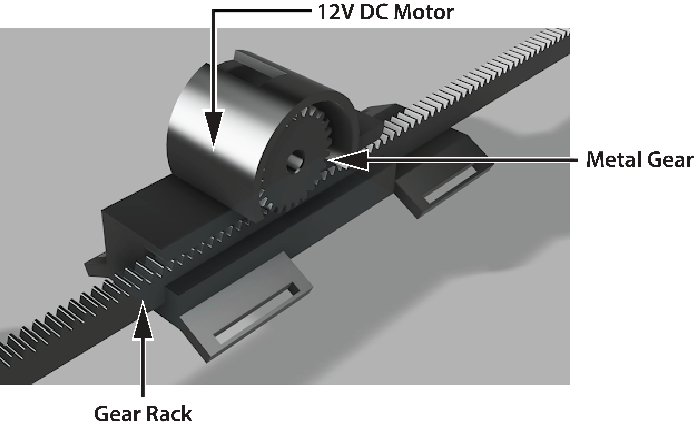
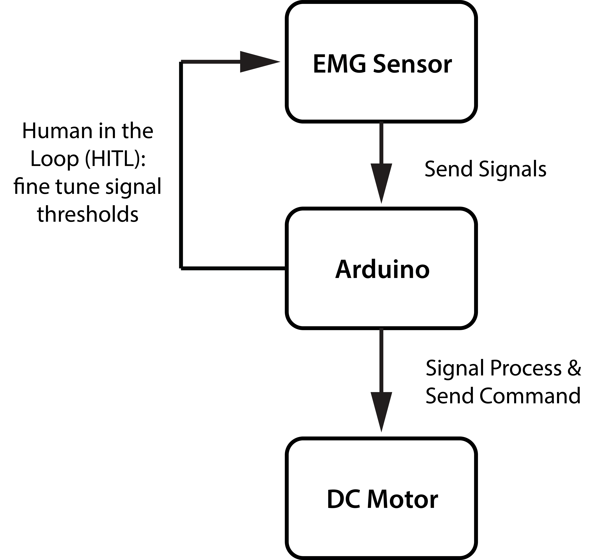
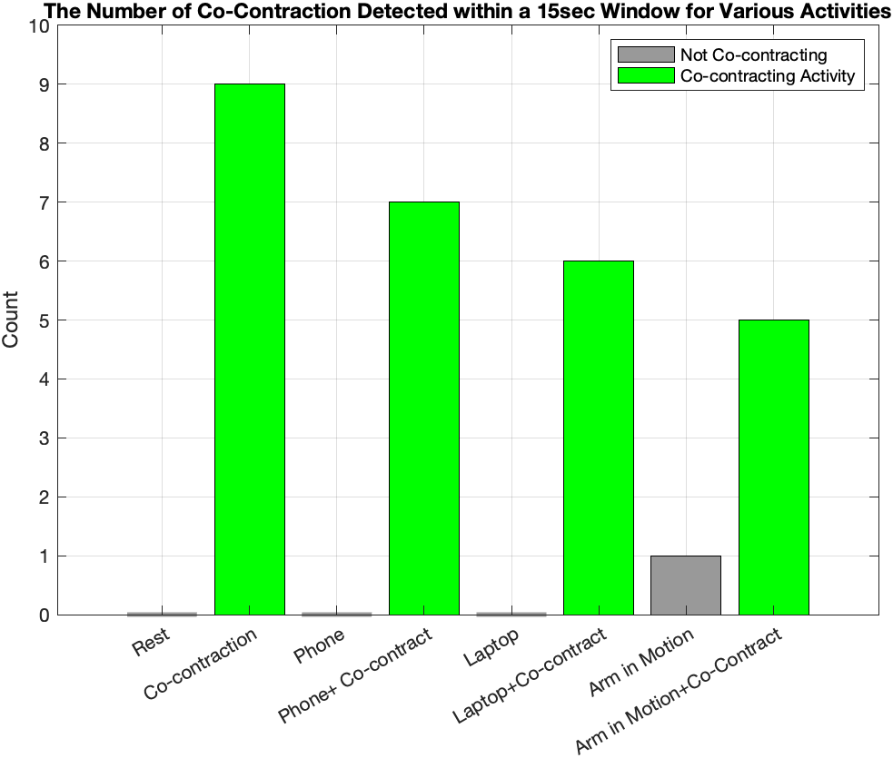
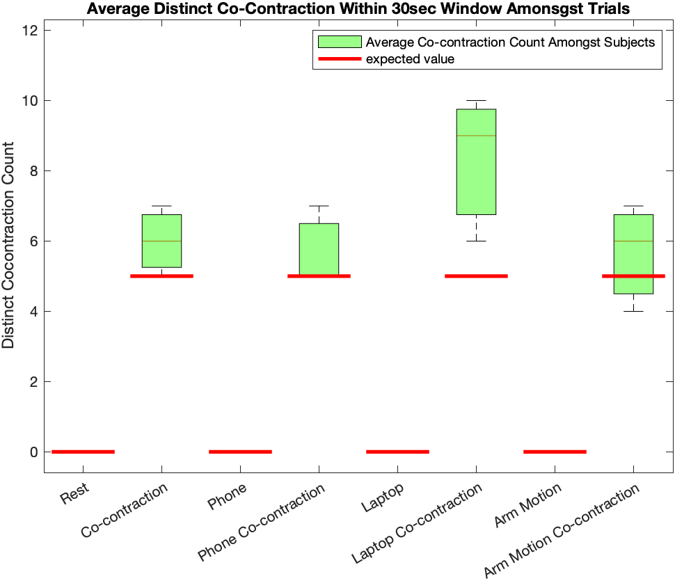

The Extendo Arm is a wearable assistive device designed to augment human reach and interaction through intuitive biomechanical control. Activated via muscle co-contraction, the system translates natural neuromuscular signals into mechanical extension, enabling the user to engage the device without external controllers or conscious mode switching. The project explores how assistive robotics can integrate seamlessly with human movement by leveraging existing motor control strategies. This work was completed as part of BE124, Biomechanics of Movement and Assistive Robotics, fall 2023.
MOTIVATION & CONTEXT
The Extendo Arm was inspired by research in human augmentation, particularly a study from University College London that introduced a robotic “third thumb” to examine the brain's ability to adapt to an additional limb.
In this work, participants controlled a 3D-printed thumb mounted at the wrist using force sensors under the big toe, demonstrating significant improvements in motor control within five days—even without visual feedback [1].
These results highlighted the nervous system's capacity to rapidly embody and control augmentative devices.
Building on this insight, the Extendo Arm explores how wearable robotics can enhance human capability while remaining intuitive and embodied.
Rather than adding a new limb, the device augments existing anatomy by leveraging muscle co-contraction, a natural motor control strategy, to achieve assistive extension with minimal cognitive load.
ABSTRACT
The Extendo Arm consists of a forearm-mounted mechanical extension mechanism driven by an actuator and controlled through electromyography (EMG). Muscle activity from antagonist muscle pairs is processed to detect co-contraction levels, which are then mapped to device extension.
Key design considerations included:
Wearability and comfort during prolonged use
Mechanical compliance to maintain user safety
Signal robustness to reduce false activation
The final system demonstrates a proof-of-concept for co-contraction-based control in wearable assistive robotics.
METHODS
CONTROL STRATEGY
To enable intuitive control without interfering with natural arm function, the Extendo Arm uses muscle co-contraction as its primary control signal.
Prior work has shown that co-contraction can support multi-degree-of-freedom control but often at the cost of rapid fatigue when sustained [2].
To address this, our system detects brief, intentional co-activation of antagonist muscle groups, using co-contraction as a discrete trigger rather than a continuous input, thereby reducing fatigue while maintaining reliable control [3].

MECHANICAL DESIGN
Multiple linear actuation mechanisms were evaluated, including scissor, telescoping, carbon-fiber string, and prebuilt linear actuators.
A rack-and-pinion mechanism was selected for its compact form factor, strength, speed, and precise control. The gear‐rack system converts motor rotation into linear extension and retraction, achieving full extension in under 1.5 seconds.
The mechanism is housed in a custom 3D-printed enclosure designed to conform to the forearm and provide user safety.
A standard hex-bit end-effector interface allows for rapid, magnetic attachment of interchangeable tools, enabling task-specific customization.

SYSTEM IMPLEMENTATION
The system comprises an EMG-based control module and a mechanical actuation module.
EMG signals are acquired using an Arduino UNO with two OLIMEX EMG Shields and six electrodes placed over the flexor and extensor digitorum muscles.
Signals are filtered, rectified, and processed using an RMS-based algorithm to detect co-contraction within a tuned temporal window.
Upon detection, a binary signal toggles motor activation and direction, controlling extension or retraction of the rack.
Motor actuation is handled by a 12V DC motor driver powered by an 11.1V LiPo battery.
All components are mounted directly on the forearm, resulting in a self-contained, wearable system with no external controllers or wiring.


RESULTS & DISCUSSION
To assess the robustness of the co-contraction detection algorithm, quantitative data were collected across four task scenarios: empty hand at rest, holding a 4 lb laptop, holding an iPhone, and waving the hands. These tasks were selected to introduce increasing levels of background muscle activity. Data were collected from three participants (two female, one male; ages 20‐24).
For each task, participants completed a trial without intentional co-contraction and a trial with deliberate co-contraction performed in 5-second increments. Each trial lasted 30 seconds, resulting in eight 30‐second trials per participant. This protocol enabled evaluation of the algorithm's ability to distinguish intentional co-contraction from incidental muscle activity.


Overall, the algorithm successfully filtered out muscle activity when co-contraction was not attempted, even during tasks involving object handling and dynamic motion. During intentional co-contraction trials, distinct activation events were reliably detected; however, significant variance was observed between subjects and across task conditions. This variance increased as the amplitude and frequency of background muscle activity intensified, particularly during dynamic movements such as waving.


These results indicate that the control algorithm is effective at isolating intentional co-contraction signals, while also highlighting the sensitivity of EMG-based systems to motion complexity and inter-subject variability.

In conclusion, the projct presents a novel approach to enhancing upper-limb functionality through the development of an extendable arm exoskeleton controlled via muscle co-contraction. The insights gained from this work inform future directions in adaptive control, noise-robust signal processing, and user-centered exoskeleton design, marking a meaningful step forward in the development of wearable assistive and augmentative technologies.
REFLECTIONS
This project was my first real deep dive into wearable robotics and assistive device design, and it completely changed how I think about the relationship between the human body and engineered systems. It pushed me to see assistive technology not as something that replaces human ability, but as something that should work with the body—amplifying natural movement rather than overriding it. Both the course and this project ended up being a significant turning point in my growing interest in wearable and bio-integrated devices.

ACKNOWLEDGEMENTS
This project was completed in collaboration with my two group partners—and now close friends—Anhphu and Mackenzie, whose creativity, collaboration, and constant enthusiasm played a huge role in bringing this work to life.
Working with them not only shaped this project, but also inspired me to continue building many of the independent projects documented on this page.
I would also like to thank Professor Patrick Slade and the course assistants for their support throughout ES124.
This was the first time a course like this was offered at Harvard and made accessible to undergraduates. The course brought together students from a wide range of specialties and ultimately became a transformative experience that sparked my initial interest in wearable devices and assistive robotics.
REFERENCES
1. Kieliba, P., Clode, D., Maimon-Mor, R.O., Makin, T.R., 2021. Robotic hand augmentation drives changes in neural body representation. Science Robotics 6. doi:10.1126/scirobotics.abd7935
2. Takagi, A., Kambara, H., Koike, Y., 2020b. Independent control of cocontraction and reciprocal activity during goal-directed reaching in Muscle Space. Scientific Reports 10. doi:10.1038/s41598-020-79526-1
3. Gurgone, S., Borzelli, D., Paolo De Pasquale, Berger, D., Tommaso Lisini Baldi, D’Aurizio, N., Domenico Prattichizzo, d’Avella, A., 2022. Simultaneous control of natural and extra degrees of freedom by isometric force and electromyographic activity in the muscle-to-force null space. Journal of Neural Engineering 19, 016004–016004. https://doi.org/10.1088/1741-2552/ac47db